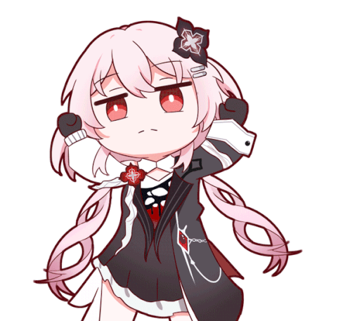

| Номер | Название | Статус | Приоритет | Срок | Исполнители |
|---|
🗂️
Ничего не найдено — попробуйте другой фильтр.

Напишите боту в Telegram команду /desktop — он пришлёт одноразовый 6-значный код. Введите его сюда.
| Номер | Название | Статус | Приоритет | Срок | Исполнители |
|---|